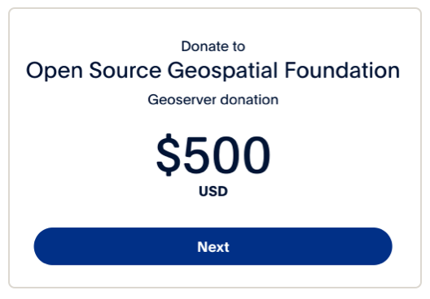
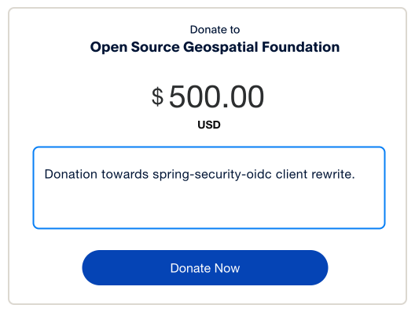
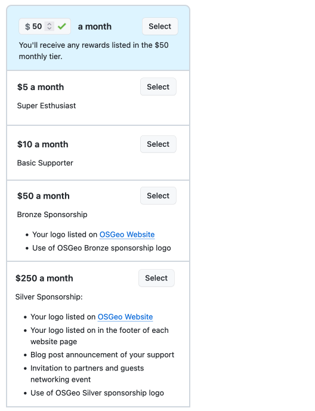

Sponsor via Open Source Geospatial Foundation
Financial contributions for the project are managed by the Open Source Geospatial Foundation as described below. Your financial support accumulates towards your OSGeo sponsorship level. For more information on opportunities and benefits see page on "How to become a sponsor?".
Sponsorship via Invoice
To request an invoice from OSGeo for GeoServer sponsorship:
- To participate please email treasurer@osgeo.org to express your interest.
- We need some information to properly thank you for your support:
- Donations: Please include your name, and a useful link, for GeoServer website.
- Sponsorship: Please include organisation logo to be listed on the GeoServer and OSGeo websites.
Example email sponsoring GeoServer:
Subject: GeoServer Sponsorship
To: treasurer@osgeo.org
Treasurer:
We would like to sponsor the GeoServer Project, as a member of the GeoServer community we recognize the value in supporting open source.
Please send us an invoice for $3000 USD. This brings our total sponsorship to the level to be recognized as an OSGeo Silver sponsor (please see attached organization logo).
Regards,
Marie Tharpattachement: earth_observatory.svg
Donate via PayPal
Easy for one-time donations and sponsorships (although PayPal takes a small overhead):
- OSGeo provided a PayPal donate button that goes straight to GeoServer:

- Check the currency when donating (USD rates are provided by default).
 - Use the message field to support a specific activity:
 -
The OSGeo Treasurer will contact both you and the GeoServer PSC to acknowledge your sponsorship.
- Donations: We will ask individuals for their name, and a useful link.
- Sponsorship: We will ask organisations for their logo to be listed on the GeoServer and OSGeo website.
Donate via GitHub Sponsors
Great for monthly donations, provides some sponsorship matching, a github sticker, and avoid PayPal overhead:
- Visit GitHub Sponsors page for https://github.com/sponsors/OSGeo
- Select a monthly donation sponsorship tier.
 -
The OSGeo Treasurer does not get a clear notification from Github, so we have to ask you to send an email to
treasurer@osgeo.org
:
- Donations: Individuals are asked to include your name, and a useful link, for GeoServer website.
- Sponsorship: Organisations are asked to include their logo and website URL to be listed on the GeoServer and OSGeo websites.
Example email sponsoring GeoServer:
Subject: Setting up GeoServer sponsorship
To: treasurer@osgeo.org
Treasurer:
I have used GitHub Sponsors page to setup a monthly donation of $50 to the GeoServer project.
Please see attached logo for OSGeo Bronze sponsorship level.
Anaximander
attachement: milesian.svg